送你一份《不完全酒店地图》
如果你是一個不折不扣的酒店控
那麽這份《不完全酒店地圖》
就是你一生之旅的必達之地
不仅因為獨特的設計和高品質的服务
更可貴的是，它們為你打開
另一個世界的大門
"
Stay makes memory...

懒得写字的博主 | Deanna
园艺精湛的酒店，仿佛一座宁静的小小绿洲让我忍不住想独自坐在庭院里很久很久
X

本期嘉宾 | Athena
挖掘在地文化，并赋予其别样的诠释让酒店体验成为旅途中的难忘回忆
01
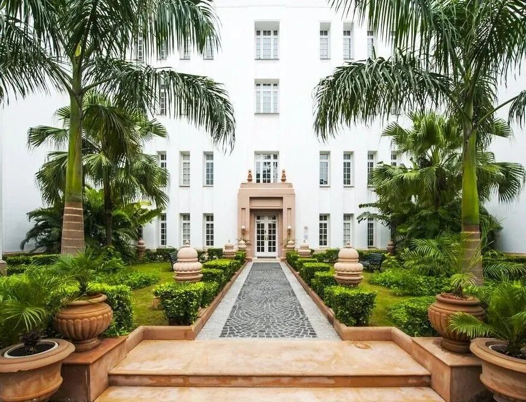
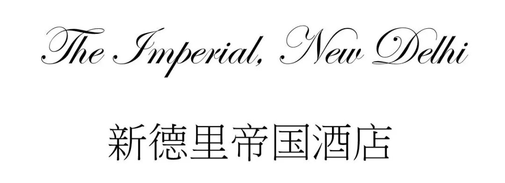
帝国酒店（The Imperial）由威灵顿伯爵建造于上个世纪30年代。作为新德里历史最悠久，也是最优雅的奢华酒店，让宾客仿佛置身于一座展示印度殖民历史的博物馆。
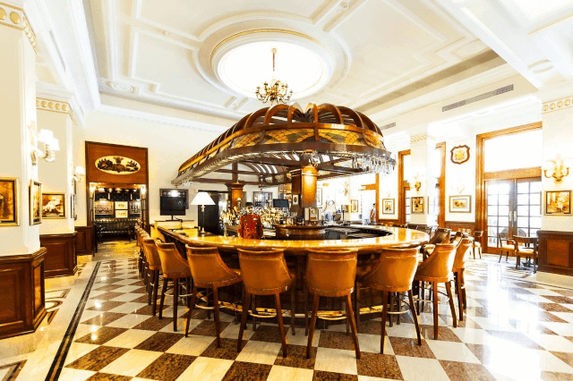
酒店的走廊，从大堂到客房，每一面墙壁上都挂满了18到19世纪，英国维多利亚女王时代的，手绘素描画及艺术品，记录着印度在那个时期的历史变迁，室内装饰的流派也保留了那时代的风格，哪怕是一个花瓶、一只沙发，一套桌椅，一件雕塑，所有的物品，都是古董，都有它背后的故事。
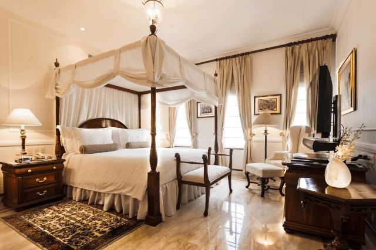
酒店本身只是一栋的洋楼，很简约的纯白色，但建筑与建筑之间是由皇家花园连接的。名字听上去很宏伟，其实就是一个园艺精湛的庭院，但它给我的感觉，仿佛一座宁静的小绿洲，我忍不住想一个人在那里坐很久很久。
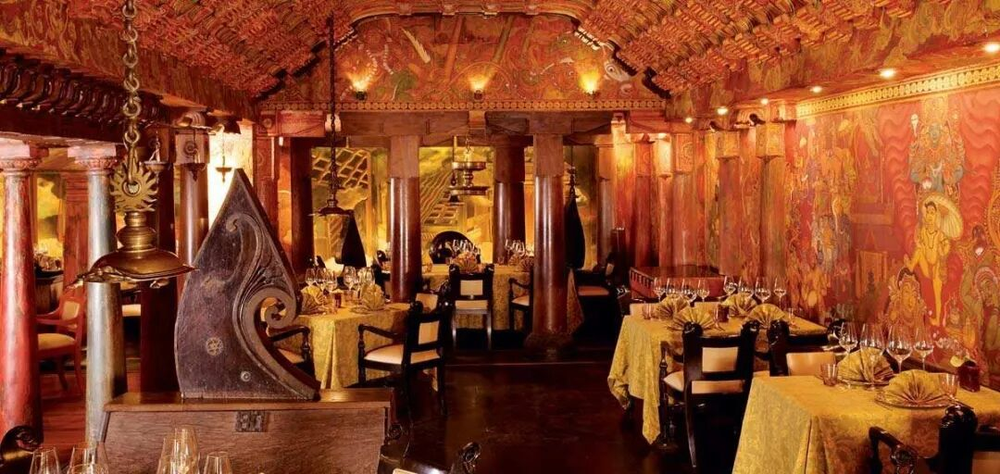
一定不能错过的是酒店的餐厅【Spice route香料之路】，在2015年世界被《Traveller》杂志评为世界十大餐厅，里头的壁画叹为观止，画了婆罗门信奉的各种神，据说工匠花了7年才完成喔！
02
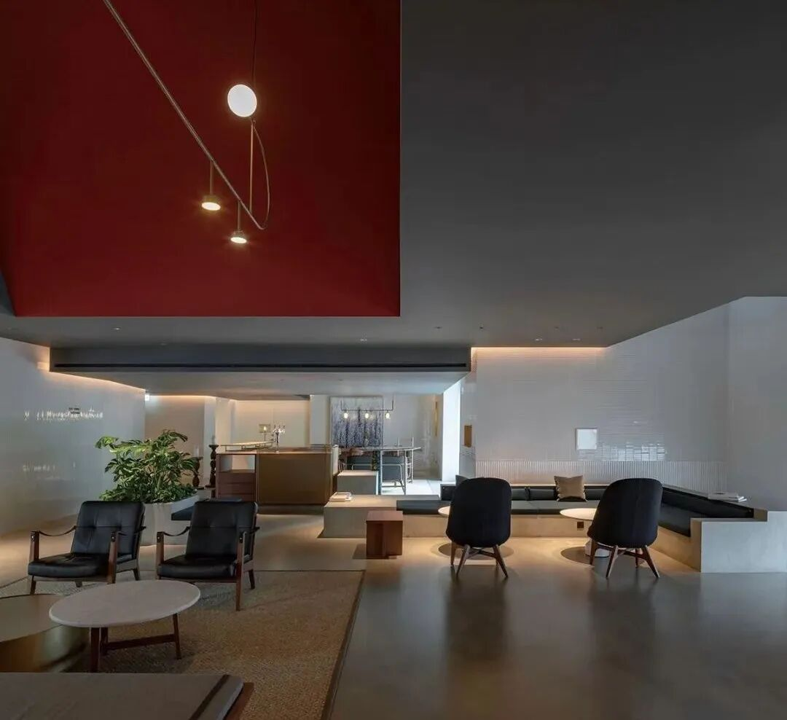
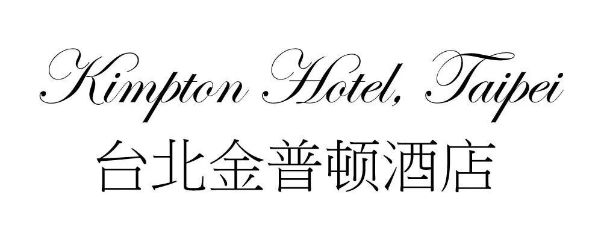
全新开幕的金普顿酒店（Kimpton Hotel）位于台北东区，外观设计上与其他楼宇并无不同，但从下榻酒店的那一刻起，颠覆了往常你对酒店的体验和感觉。
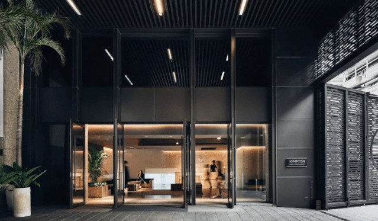
办理Check-in通常需要到前台出示证件，而金普顿酒店的Receptionist会邀请宾客坐在Lobby舒适的布艺沙发上，与你聊聊这几天的见闻，询问你在台北的工作或旅行计划。这使你不像 “住酒店”，更像是去了台北一位好朋友的家里，与他闲聊最近的生活状况。这样舒适的氛围，是酒店真正将运营理念与台北人情味及在地文化，很好地融合。
与此同时，酒店的设计及小细节更能凸显其不同，出自大名鼎鼎的建筑师事务所 —— 如恩设计。酒店的玄关颇具台湾在地文化影响，让宾客感到 “换了鞋子，放下钥匙，就是回家了 ”。装咖啡和糖包的器皿，被别具匠心地设计成袖珍版电饭煲，十分可爱。这些80-90年代台湾百姓几乎家家户户都会的东西，勾起了不少台湾原住民童年的回忆，也让外来游客对台湾的在地文化，有了更多地体验和了解。
03
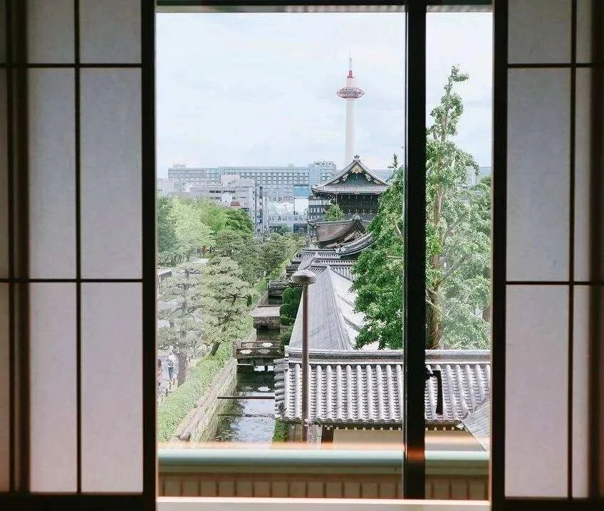
京都作为日本文化重镇，旅行者们通常会选择三井花园这样老牌的奢华酒店，或是入住当地民宿去体验东瀛文化。
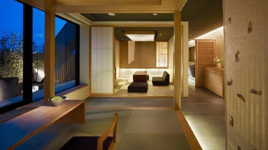
甘乐酒店（Kanra Hotel），完美融合了东西方美学，现代简约的设计风格中却不时透露出无限禅意。酒店外的枯山水，大堂内的插花，桌上的青苔盆景，都将东瀛特色和当代酒店的便捷设施进行了很好的融合。
房间内部装潢走摩登和风，营造传统日式风格。如果预定可以四人入住的家庭房，房间内同时具备洋式席梦思床和日式被褥，让每一位旅客可以同时享受到不同的入睡体验。
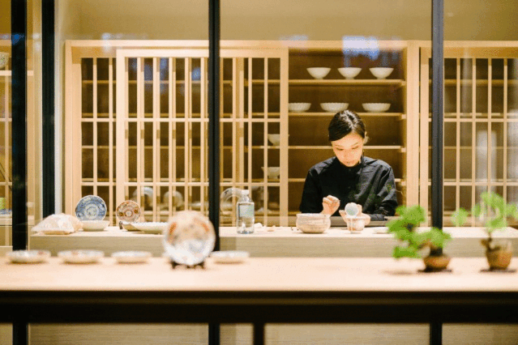
酒店的洗手台极具设计感，宽敞的台面可以满足每一个女生美妆产品的摆放的需求。同时，木质感的浴缸，也将日本的入浴文化得以彰显。在一天的旅途之后，回到酒店享受一个室内温泉，洗去旅途疲惫的同时，将身心得以放松，更好地领略旅途中的良辰美景。
文末彩蛋 住酒店的小癖好 Nicolai 尼古莱枕头喷雾
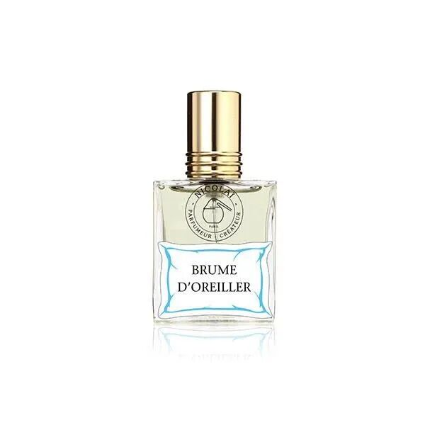
【END】
欢迎留言，与我聊聊
如何定义一间好酒店呢？一间好的酒店能为我们的旅行生活带来什么？

创作日期 | 2020 . 02 . 29